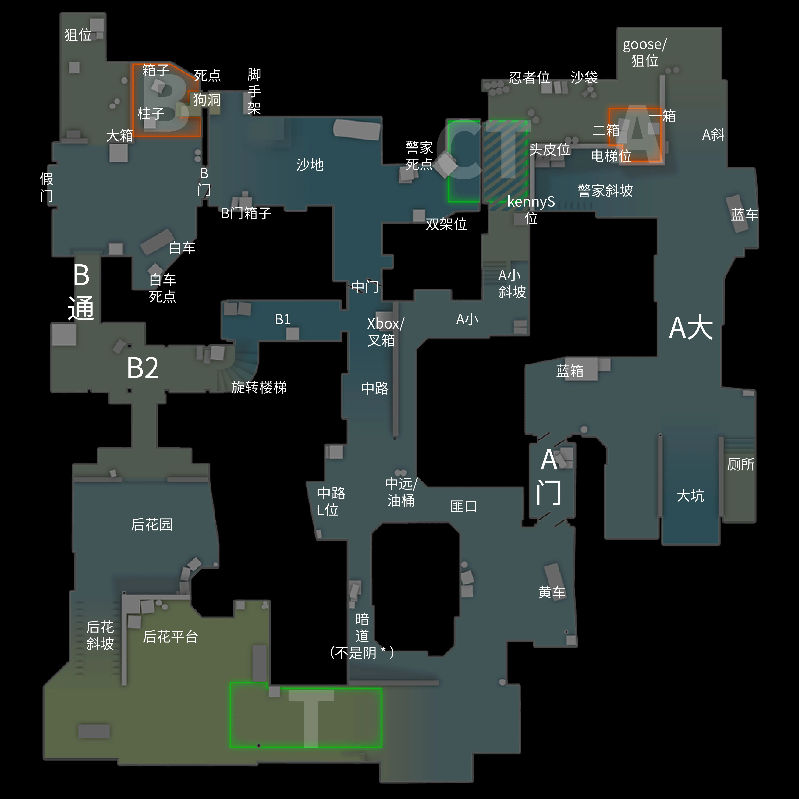
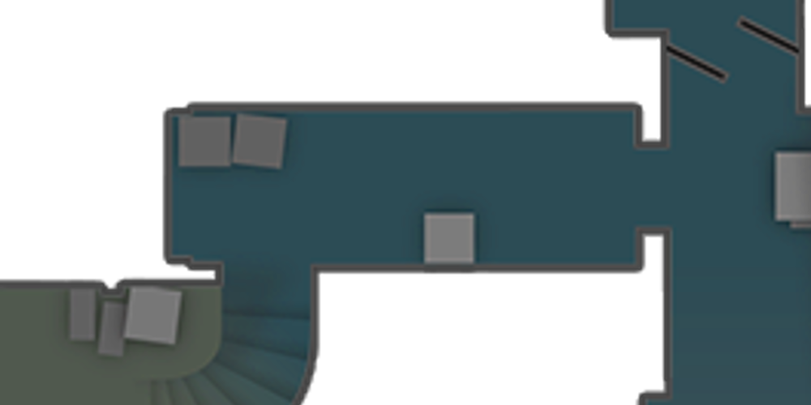
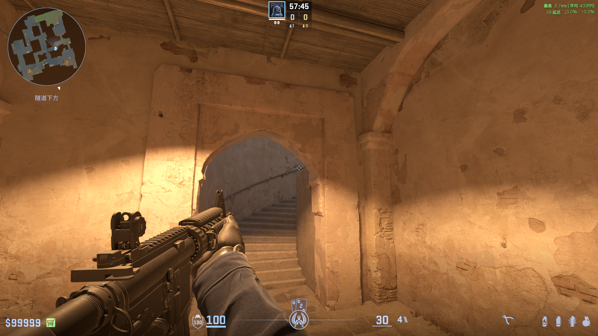
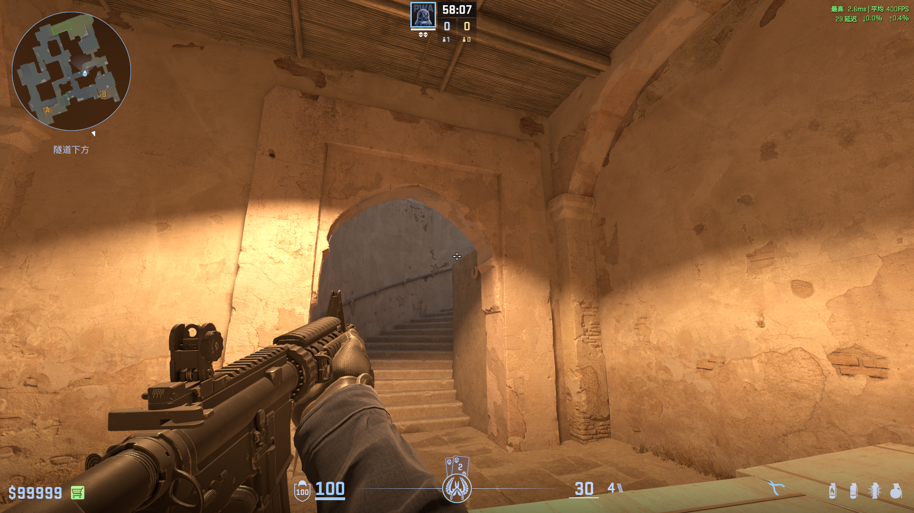
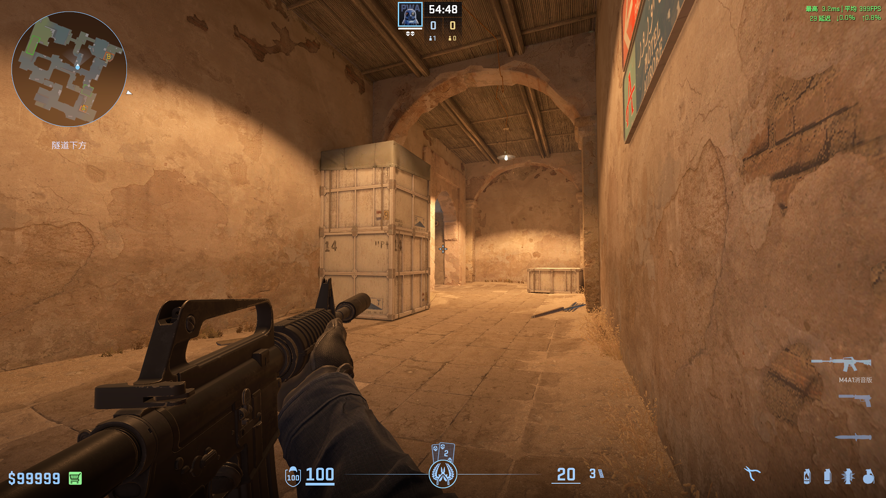
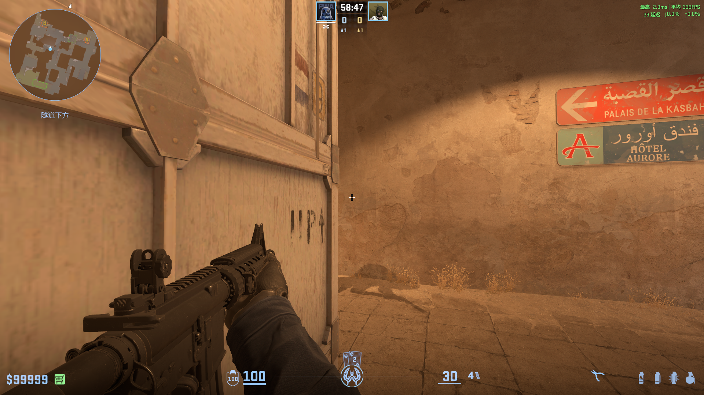
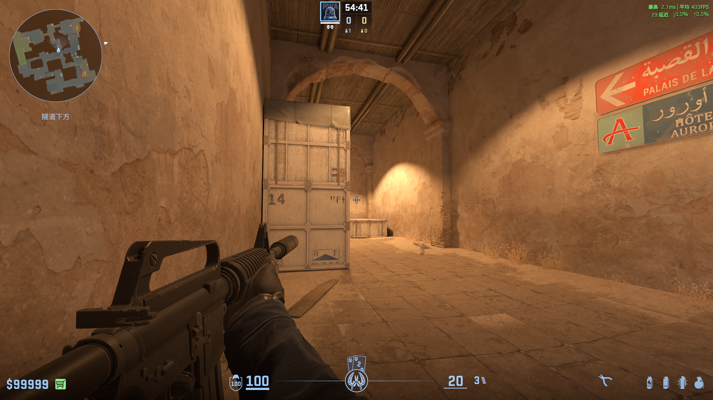

DUSTⅡ炽热沙城 2
从一个点位，
到整张地图。
点位名称

01 / 06 · 本章结束 将鼠标移到窗口外，滚动翻章
地图核心运营逻辑
引言
Dust2作为爆破地图的经典代表，其“田字格”的地图结构影响了无数后续地图的设计思路。
一、核心思路：
T优先控制中路，选择“夹 A”或“夹 B”（中路上 A 小配合 A 大、或中路出 B1/B2 配合 B 洞，形成两线夹击）。
二、双方最快见面地点
- A大：CT 永远比 T 快（但也只快一点点）。
- 中路：暗道T 快过 中门前压CT 快过 中远T 快过 A小CT
- B通：无论 T 哪个身位都不可能比 CT 快。
- 旋梯：一二身位CT 快过 T（T一定能更快占领B2,架住旋梯）
三、默认阵型：
Q：什么是“默认”？
A：基于第二点中的双方地形优势，通过控制地图来限制对方的活动范围，让对方无法轻易活动，进而限制对方获取信息的过程。
CT默认阵型：3A2B
A区：
- 如果T开局没有抢A大：
CT留1个人在A大，剩下2个人可以选择：（激进）顶 A 小打前点；
（保守）在斜坡和警家架枪，把对面放进包点再打。
B区：
- B区 1 个+沙地 1 个
- B区大箱 1 个 + 白车 1 个
02 / 06 · 本章结束 将鼠标移到窗口外，滚动翻章
CT默认防守
CT常规抢A大
打法一：
一号位（只抢A大）：
- 最快速度，低头走路（防止对面有“神人”开局就丢闪），
- 丢漂移A门火（不用丢进A门，用来烧出A门的T，后续也会有A门烟覆盖），
- 借助队友闪光下大坑。
二号位：
- 丢蓝箱火（让T无处可躲），
- 捏反清闪（抢枪位，与大坑队友形成交叉枪线）
三号位：
- 丢A门烟，
- 接着丢A大反清闪（记得要报，如果对面没抢，不要连续丢，防止浪费）
打法二
①丢A门雷（有队友给蓝箱火，没有自己给蓝箱火），丢自助反清闪
②给蓝箱火，架住rush的T
③连续给反清闪
T破解A门烟（超纲）
提前给一个A大房顶火
控下A大后，该干什么？
①
单挂A大时，不要让对面知道你的站位，知道你在A门近点，对面可以丢反清闪。
扫射烟雾，不要打空整个弹夹，对方完全可以抓你换弹timing。（由于目前有无声换弹，自行斟酌）
②
阅读队友的防守站位。并且根据场上形势，灵活多变。
例如：
如果队友喜欢顶 A 小近点，辅助他，要么保他活，要么让他一换多。（一换一都是亏的）
如果A小压力不大，改为静音回中路，去帮中路的队友。
A大感觉到有压力，再回去帮 A 大的队友，两人交叉站位。
A 大没抢下来？第一反应：跑！保活！
- 回到警斜丢A大隔断烟，然后判断T的进攻思路：
（1）如果对面看见你丢烟、第一时间不往 A 大打，说明对面打法比较
猥琐、不敢钻烟——你可以安心在包点架枪；这种烟可以每把都丢，
直到他们敢钻烟为止；
（2）一旦他们敢钻烟、烟对他们失效，就要换方式。
- 听T的动静进行反清，做到一换多。
- 与A区其余队友汇合，进行A小推进（保一边，增加回防空间）
- 蹲二箱后、蹲忍者位、沙袋头皮位。（分段越高越不推荐）
CT B区防守
一、去 B 的路上：不要直跳中门
- 分段越高，T大狙越会”收过路费“（一分五十二秒，跳就死，不跳yes）
- 正确走法：前点贴过去/从后点跳着过。
- 对面是zywoo，怎么过？（超纲）
丢过点雷，利用炸起的灰尘过（相比烟雾，代价小，用时短）
二、开局丢什么道具
只丢B通火，踩B通近点，捏雷听脚步（趁着有火隔断），peek拿信息
只丢火，不立即丢烟的原因：
在没有得到任何信息的情况下，盲目交烟，不仅阻碍了自己后续主动获取信息的能力。还让你在对面第二时间进攻时没有道具阻断，而且回防 A 区时没道具。
目前只有三种情况开局丢烟：
- 预判对面经济，短枪rushb，可以给烟火套餐。
- 预判T有大狙来B通，逮捕想要多拿信息的你。（越到高分段，当比分焦灼，你明知T有狙，但暗道没见，这种预感就越发强烈，甚至还有T双狙的可能）
- 你想营造保守感，玩karrigan play（小心烟雾里有食人猪）。
后续的捏烟防守，你可以站B通近点peek、站大箱后peek、站假门看缝。（灵活多变，防止T抓习惯）
单B情况，少混烟开枪，T数你子弹，缓慢混在烟里，瞬间开爆。T知道你在哪，你没有伤害道具，你也来不及丢，根本无法招架。
03 / 06 · 本章结束 将鼠标移到窗口外，滚动翻章
CT变奏打法
CT利用大狙A小前压
用大狙枪械优势制造首杀（视角不要超过油桶，防止近大远小）
T反制手段：暗道给A小火
CT前顶B1
当暗道没有T跳跃侦查中路，是看不到CT前压的
打法一：夹击B2（类似于nuke ABgo）
①②分别走B1和B通
走B通CT丢白车死点火，掩盖脚步。
走B1 CT给旋梯闪光。
通过B1CT 勾引，B通CT完成补枪收割。
打法二：前压单挂B1：
点位推荐：






CT中路前顶
主要是抓住T方爱打两边的习惯，对于中路的疏忽，制造减员，从而打断T方进攻。
CT可以丢暗道烟、丢中路右侧高闪
04 / 06 · 本章结束 将鼠标移到窗口外，滚动翻章
CT中期思路
CT中路防守
一、中路防守只有一个核心任务：帮 A 大收集信息
- 中路要汇报：A 小上没上人、提速快不快、上了几个。
- 如果 A 小对面提速很快，丢A小火和雷，拖延T上A小的速度。
- 感觉压力大时就“反一颗烟”（把烟封在 A 小方向）。不要想着在中路
正面帮 A 小接人——对面高打低，你是劣势枪位，硬接必死；先保证
自己活下来，给烟并向队友报“A 小上了”，再根据脚步多少静音回防。
二、什么时候回B（组成双 B）
如果A小给了烟，而T第一时间没有上平台，不要傻傻在中门架着（分段越高，T大狙越会惩罚每个贪得无厌的中路CT）
中路有压力就反烟，往沙地靠。
中路被抢，乖乖回B区和队友“双 B”，放掉沙地。（你死在沙地，单B的队友同时受到B通、狗洞、B门，三条枪线。）
反向当做一个CT占领B包，T的回防局。（众所周知，沙二的B包难回防）
炸中门烟：
利用双键投掷，在雷爆炸前，减少声响。
CT站中门近点：
T上xbox会有影子，优先架住中门近点和A小。
CT A小防守
不要单人站A小前点（T真想上A小，基本是多人，而且可能同时吃B1和中远的两条枪线。）
A区主防者的任务：
- 拖延T进攻A小：
用“晃身”架枪（反复小身位探），发现 A 小出人，丢A小烟。
- 让T的A小爆弹卡壳：
当对面开始爆弹，你可以立即给火，做到二次阻断进攻。（最好有CT有平台大狙直架A小，他开枪）
- 根据T的A小脚步，请T吃雷。
05 / 06 · 本章结束 将鼠标移到窗口外，滚动翻章
T默认进攻
T常规抢A大（刚需A大第一身位！）
一号位的核心目标：站住蓝箱，（让队友可以流畅走出A门，能够架住大坑的CT，与出A门的后续队友形成交叉枪线）
二号位的核心目标：辅助一号位进行补枪
三四五号的核心目标：1.丢A大闪（辅助队友，制造对枪优势）2.架住中远，防止CT前压
T RUSH B
一二号位进行rush
三四五号位，分别看旋转楼梯、丢高闪和假门闪光、丢B门烟、跟进补枪
06 / 06 · 本章结束 将鼠标移到窗口外，滚动翻章